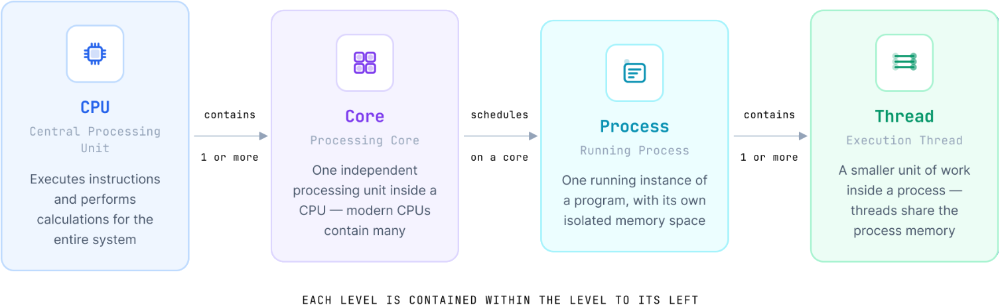
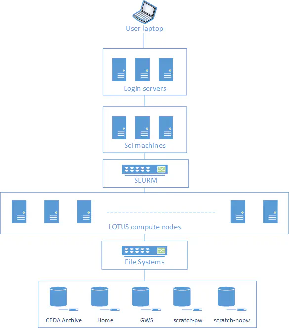
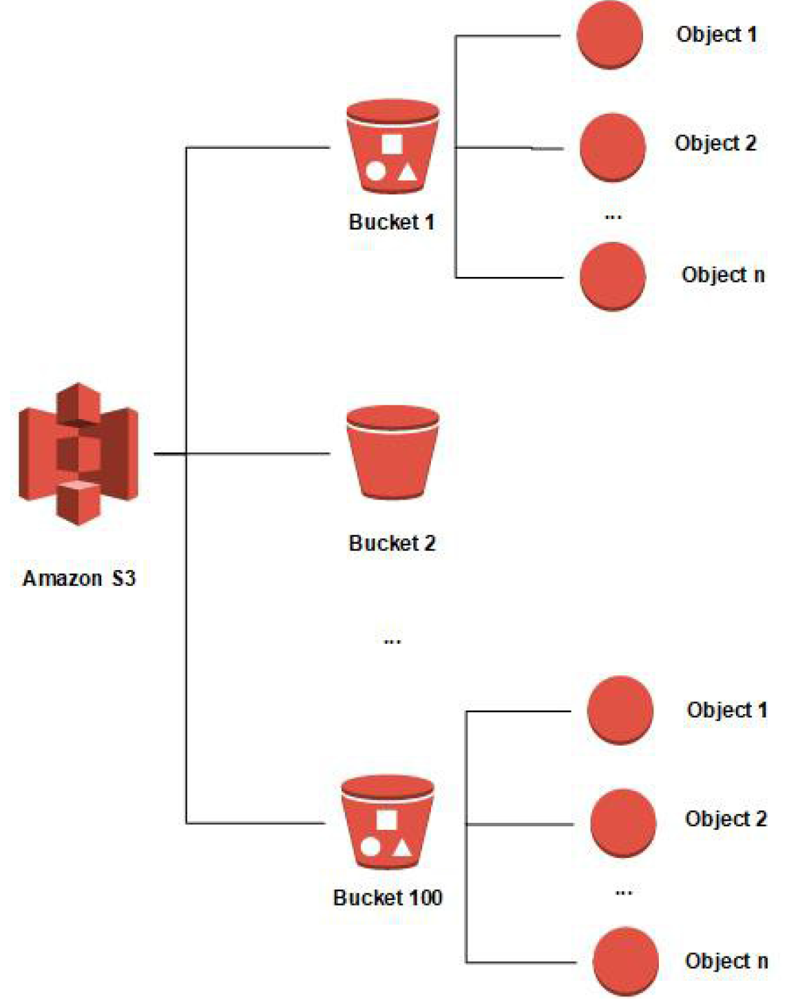

Summary and Schedule
Introduction
This workshop introduces practical tools and workflows for working with large n-dimensional scientific datasets used in oceanography, climate, and meteorology in a cloud-friendly way.
You’ll learn to:
- Migrate environmental data from traditional formats such as NetCDF to cloud-native formats like Zarr and VirtualiZarr
- Store, process, and access multi-terabyte datasets efficiently using object storage and parallel processing tools such as Dask
- Build scalable and reproducible cloud-native workflows for environmental data
- Visualise and explore large datasets efficiently in the cloud
The aim is to help you understand not only how these tools work, but also why they are useful for analysing, sharing, and managing environmental data more efficiently.
What data do you work with?
Before we start, take a moment to think about your own experience with environmental data. This short activity will help us understand the kinds of datasets and challenges you bring to the workshop.
- In the shared notes document (CodiMD), write one sentence about the data you usually work with and roughly how large it is.
- Describe one challenge you have faced when working with data that is too large for your computer or too slow to process.
- List one tool, library, or computing system you have used to help with analysis, storage, or data access.
In this workshop, we will use:
jupyterlabnumpynetCDF4xarrayzarrdask-
fsspec,s3fs,boto3, andobstorefor cloud storage access -
matplotlibandcartopyfor plotting -
icechunkfor versioning -
virtualizarrfor virtual Zarr stores -
stacfor cataloging -
topozarrfor generating multiscale Zarr - others…
The exact environment is provided in the course repository as an environment.yml file for creating a conda environment.
Jargon busting
Here are some of the main terms that appear throughout the workshop.
CPU, core, process, and thread
The CPU is the Central Processing Unit that executes instructions and performs calculations. A core is one processing unit inside a CPU, while a process is one running instance of a program and a thread is a smaller unit of work inside that process.

Parallel processing and Dask
Parallel processing means splitting work so that different parts run at the same time, often across cores, processes, or workers. Dask is a Python library that facilitates parallel computing by breaking down large computations into smaller tasks that can be executed concurrently.
RAM and storage
RAM is the computer’s short-term memory. Storage is where data live more permanently, such as on disk, SSDs, shared storage, or object storage.
Cluster, node, and HPC
A cluster is a group of connected computers that work together, and a node is one computer within that cluster. High-performance computing (HPC) refers to large shared systems designed for heavy computation and large data processing.
JASMIN and SSH
JASMIN is the UK’s data analysis facility for data-intensive environmental science. It provides notebook services, shared storage, and computing resources for environmental data work. SSH (Secure Shell) is a secure way to connect to a remote computer over a network.

Group workspace
A group workspace is shared storage on JASMIN for collaborative work and course data.
Jupyter notebook, and kernel
A Jupyter notebook is a browser-based environment for running code, text, and plots together. A kernel is the Python environment that runs notebook code.
Environment.yml and conda/mamba
An environment.yml file is used to define a Conda environment, specifying the Python version and the packages required. Conda and mamba are tools for managing these environments and installing packages.
Dataset, array, coordinate, and data variable
A dataset is a collection of related scientific data and metadata in different formats. An array is a multi-dimensional grid/matrix of values, while a coordinate is a named axis such as time, latitude, longitude, or depth/altitude. A data variable is the main measured or modeled value, such as temperature or salinity.
Metadata and controlled vocabulary
Metadata is information about the data, such as units, long names, chunk sizes, and coordinate definitions. A controlled vocabulary is a curated list of standard terms and identifiers used to avoid ambiguity in metadata.
Zarr, Xarray, chunk, and lazy loading
Zarr is a chunked data format for large N-dimensional arrays. Xarray is a labelled array library for working with multidimensional scientific data. A chunk is a smaller piece of a larger array, and lazy loading means data are not fully read into memory when a dataset is opened; they are loaded only when needed.
Object storage and bucket
Object storage keeps data as independent objects in a storage system, often accessed through APIs such as S3. A bucket is a top-level container for objects in object storage.

POSIX and Object-Store file system
A POSIX file system is a traditional file-system model with directories, files, and paths that are accessed through a local or mounted storage interface. It is commonly used for shared filesystems and local disks.
An object-store file system is a storage interface that exposes object storage through filesystem-like operations, often used in cloud workflows. It is different from a traditional POSIX filesystem because data are accessed through object APIs rather than a normal directory tree.
Cloud-native format
A cloud-native format is designed to work efficiently with object storage and remote access patterns, often by allowing partial reads and parallel access.
| Setup Instructions | Download files required for the lesson | |
| Duration: 00h 00m | 1. Data Formats, Metadata, and Vocabulary |
What are the main data formats used to store ocean and atmosphere
data? What is metadata, and how does it help other people find and understand my data? What is a controlled vocabulary, and why is it better than free text? Which international standards should I be aware of when publishing environmental data? How do these standards connect to modern cloud‑native formats like Zarr? :::::::::::::::::::::::::::::::::::::::::::::::::: |
| Duration: 00h 45m | 2. Challenges of N-Dimensional Data |
How do NetCDF, GRIB, and HDF5 organise large n-dimensional
arrays? Why have typical datasets in meteorology and oceanography grown so much in size? What happens when we open these files in standard tools like xarray? Why is it important to share data in a way that supports partial access rather than whole-file downloads? How do chunking and parallel processing affect performance, scalability, and memory use? :::::::::::::::::::::::::::::::::::::::::::::::::: |
| Duration: 01h 30m | 3. Cloud-Native Formats |
What makes a format cloud-native? Why are traditional file-based formats not always a good fit for cloud storage? Which cloud-native or cloud-optimized approaches are relevant for Earth system data? How do cloud-native formats change the way we work with environmental data? :::::::::::::::::::::::::::::::::::::::::::::::::: |
| Duration: 01h 55m | 4. Zarr Data Model and Chunked Storage |
What is Zarr, and how does its data model differ from formats like
NetCDF or HDF5? How does Zarr store metadata about arrays and groups? What is chunked storage in Zarr, and why is it useful for large multidimensional datasets? How is Zarr changing the way ocean, climate, and meteorological data are stored and accessed? :::::::::::::::::::::::::::::::::::::::::::::::::: |
| Duration: 02h 45m | 5. Python for Zarr |
What Python packages are commonly used to work with Zarr data? How can I inspect a Zarr store directly with the zarr
library?How does xarray represent Zarr datasets as labelled N-dimensional data? When is the data actually loaded into memory? What basic xarray operations are useful for oceanography, climate, and meteorology? :::::::::::::::::::::::::::::::::::::::::::::::::: |
| Duration: 03h 35m | 6. Choosing Chunks at Scale |
What is a chunk, and why does its shape matter for performance? How should I choose chunk sizes for different types of analysis? What are the trade-offs between large and small chunks? How can I rechunk a Zarr dataset and save it for future use? What is sharding, and how does it help reduce overhead during storage and access of many small chunks? :::::::::::::::::::::::::::::::::::::::::::::::::: |
| Duration: 04h 40m | 7. Parallel Processing with Zarr |
Why do we need parallel processing for large Zarr datasets? How does Dask parallelise xarray and Zarr computations? How do chunking and lazy loading support parallel work? What other parallelism tools do Python users sometimes combine with Zarr? :::::::::::::::::::::::::::::::::::::::::::::::::: |
| Duration: 05h 45m | 8. Reading Real-World Zarr Datasets in Python |
Which publicly available Zarr datasets can I use for experimentation and
learning? How do I open Zarr datasets from cloud object storage (Google Cloud, AWS S3) with Python? How do irregular grids, ragged arrays, and ensembles appear in Zarr + xarray? How do chunks and storage layout influence how I analyse these datasets? :::::::::::::::::::::::::::::::::::::::::::::::::: |
| Duration: 06h 50m | 9. Object Storage and Cloud Data Organization |
What is an object store, and how is it different from storing data on a
server filesystem? Why is object storage a good fit for large-scale data sharing and cloud-native science? How does object storage support secure, concurrent, and parallel access? How can I use commercial cloud object stores and self-hosted solutions like MinIO? :::::::::::::::::::::::::::::::::::::::::::::::::: |
| Duration: 07h 45m | 10. Converting Traditional Formats to Zarr |
Why convert NetCDF data to Zarr, and what changes in the way we access
and process data? How do we choose chunk sizes for Zarr when starting from NetCDF files? How can we use Dask and xarray to convert and write data to Zarr efficiently? How do we test that the converted data is usable and correct (e.g. computing mean values)? :::::::::::::::::::::::::::::::::::::::::::::::::: |
| Duration: 08h 55m | 11. Case Studies |
How are different teams and organisations actually converting and
serving data in practice? What problems do they face, and which solutions have worked well (or badly)? What lessons can we take from their architectures and workflows for our own projects? :::::::::::::::::::::::::::::::::::::::::::::::::: |
| Duration: 09h 40m | 12. Versioning Data with Icechunk |
What problems arise when we use plain Zarr for shared, evolving
datasets? How does Icechunk add safety, consistency, and reproducibility on top of Zarr? How can we use transactions to update data atomically and avoid partial writes? How can we reference and replay specific versions of data for reproducible analysis? :::::::::::::::::::::::::::::::::::::::::::::::::: |
| Duration: 10h 50m | 13. Virtual Zarr with Virtualizarr |
Why might we prefer a virtual Zarr store over fully converting data to
Zarr? How do we create a virtual dataset from NetCDF files already on the server? How does a virtual Zarr store look when opened with xarray? What do we gain by virtualising instead of copying all the data? :::::::::::::::::::::::::::::::::::::::::::::::::: |
| Duration: 11h 40m | 14. Organizing Cloud Zarr Data with STAC |
How does STAC help us organise and discover Zarr data cubes in the
cloud? What is the difference between a STAC Catalog, Collection, and Item? How can we programmatically build STAC metadata for our Zarr datasets? Why might we store STAC metadata in a database instead of a set of JSON files? :::::::::::::::::::::::::::::::::::::::::::::::::: |
| Duration: 12h 35m | 15. Visualizing Multiscale Zarr and GeoZarr |
How does chunking affect interactive visualisation of Zarr data in the
cloud? What is a multiscale pyramid, and why does it come from Cloud-Optimized GeoTIFF ideas? What does GeoZarr add on top of Zarr for geospatial visualisation? How can we use Topozarr to create multiscale Zarr from our example dataset and explore it in a browser? :::::::::::::::::::::::::::::::::::::::::::::::::: |
| Duration: 13h 30m | 16. Architecture and Best Practices |
What does a good cloud‑native architecture for geospatial and climate
data look like? How do we decide when to use physical Zarr, virtual Zarr, STAC, Icechunk, GeoZarr, and multiscale pyramids? What practices help keep data systems robust, reproducible, and future‑proof? :::::::::::::::::::::::::::::::::::::::::::::::::: |
| Duration: 14h 05m | Finish |
The actual schedule may vary slightly depending on the topics and exercises chosen by the instructor.
Setup
Before starting this workshop, complete the preparation guide available in the Setup Instructions. This guide contains everything you need to get ready for the course, including instructions for both in-person and remote participants.
The setup guide covers:
- Installing the required software.
- Downloading the example datasets used throughout the workshop.
- Verifying that your environment is correctly configured.
In addition to the technical setup, the guide includes prerequisite material to help you prepare for this course. It consists of three introductory episodes:
- Shell basics for navigating files, editing text, and using help tools.
- Introductory
xarrayworkflows for opening, slicing, plotting, and processing NetCDF data. - Git foundations for tracking changes, branching, and merging.
Completing the setup guide ensures that all participants begin the
workshop with a working environment and a shared foundation in the
command line, xarray, and Git workflows.
About the example data
This workshop uses example ocean and atmospheric datasets in NetCDF, GRIB, and Zarr formats to demonstrate different approaches for storing and accessing scientific data.
The datasets are derived from widely used public products, including:
ERA5 hourly data on single levels from the Copernicus Climate Data Store (ECMWF). ERA5 is the fifth-generation global atmospheric reanalysis, providing hourly estimates of atmospheric, land-surface, and ocean-wave variables from 1940 to the present. It combines numerical weather prediction models with observations through data assimilation to produce a consistent, high-quality record for weather and climate applications. For this workshop, we use NetCDF, GRIB, and Zarr files containing the significant wave height (
swh) and sea surface temperature (sst) variables.GLORYS12V1 Ocean Reanalysis from the Copernicus Marine Service. GLORYS12V1 is a global, high-resolution ocean reanalysis based on the NEMO ocean model, combining numerical simulations with satellite and in situ observations through data assimilation to provide a consistent representation of the ocean state. For this workshop, we use NetCDF and Zarr files containing sea surface height (
ssh), potential temperature (thetao), salinity (so), and the zonal and meridional current velocity (uoandvo) variables.
These datasets provide realistic examples for exploring cloud-native geoscience workflows throughout the workshop.